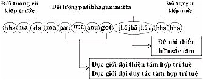

|
Tìm hiểu PHÁP HÀNH THIỀN TUỆ - Tỳ khưu HỘ PHÁP
PHẦN II PHÁP HÀNH (BHĀVANĀ) Pháp hành trong Phật giáo có 2 loại: (Samathabhāvanā). 2- Pháp hành thiền tuệ (Vipassanābhāvanā). -ooOoo- 1- PHÁP HÀNH THIỀN ĐỊNH (Samathabhāvanā) Pháp hành thiền định là pháp hành làm cho tâm an trú trong một đề mục thiền định duy nhất, dẫn đến sự chứng đắc tuần tự 5 bậc thiền sắc giới, 4 bậc thiền vô sắc giới. Pháp hành thiền định này đã có trước khi Đức Phật xuất hiện trên thế gian. Theo tiểu sử Đức Phật Gotama, khi còn là Đức Bồ Tát Siddhattha, Ngài đã từng thọ giáo với vị Đạo sư Ālāra Kalāmagotta về pháp hành thiền định, Ngài đã chứng đắc đến bậc thiền "Vô sở hữu xứ thiền"; và đã từng thọ giáo với vị Đạo sư Udaka Rāmaputta, Ngài đã chứng đắc đến bậc thiền "Phi tưởng phi phi tưởng xứ thiền" bậc thiền tột đỉnh của thiền vô sắc giới, cũng là tột đỉnh của thiền tam giới. Như vậy, pháp hành thiền định có trong Phật giáo và cũng có ngoài Phật giáo. Định nghĩa thiền định Thiền định là định tâm trong một đề mục thiền định duy nhất làm đối tượng, có khả năng chế ngự, làm vắng lặng được 5 pháp chướng ngại (nivaraṇa), bằng 5 chi thiền, làm cho tâm an định vững chắc trong một đề mục thiền định ấy, dẫn đến sự chứng đắc tuần tự 5 bậc thiền sắc giới, 4 bậc thiền vô sắc giới. Định tâm an trú trong bậc thiền, hành giả hưởng sự an lạc trong thiền định. Những điểm đặc biệt trong phần định nghĩa
Phần Giải Thích 1- Định Tâm Của Thiền Định Thiền định có chi pháp là "nhất tâm tâm sở" [1] (ekaggatācetasika), gọi là định tâm. Trong trường hợp hành giả tiến hành thiền định, nhất tâm tâm sở đóng vai trò chính yếu, làm cho tâm an trú trong một đề mục thiền định duy nhất làm đối tượng. Định tâm trong một đề mục thiền định ấy, trải qua 3 giai đoạn như sau: * Giai đoạn đầu: Nhất tâm tâm sở đồng sanh với 8 dục giới đại thiện tâm (hay dục giới đại duy tác tâm), làm phận sự định tâm tiến hành thiền định (parikammasamādhi), có đề mục tiến hành (parikammanimitta), và ấn chứng thô ảnh tương tự (ugghanimitta), làm đối tượng thiền định. * Giai đoạn giữa: Nhất tâm tâm sở đồng sanh với 4 dục giới đại thiện tâm hợp trí tuệ (hay 4 dục giới đại duy tác tâm hợp với trí tuệ), làm phận sự cận định (upacārasamādhi) có ấn chứng quang ảnh trong sáng (paṭibhāganimitta), làm đối tượng thiền định. * Giai đoạn cuối: Nhất tâm tâm sở đồng sanh với 5 sắc giới thiện tâm (hay 5 sắc giới duy tác tâm), làm phận sự an định vững chắc (appanāsamādhi) có ấn chứng quang ảnh trong sáng (paṭibhāganimitta) làm đối tượng thiền định. * Và Nhất tâm tâm sở đồng sanh với 4 vô sắc giới thiện tâm (hay 4 vô sắc giới duy tác tâm), làm phận sự an định vững chắc (appanāsamādhi) có đề mục thiền vô sắc giới làm đối tượng. Nhất tâm tâm sở này gọi là định tâm của thiền định. 2- Đối Tượng Của Thiền Định Đối tượng của thiền định tất cả gồm có 40 đề mục:
2.1- Mười đề mục hình tròn kasiṇa [2]
Đó là 10 đề mục hình tròn kasiṇa, làm đối tượng thiền định. 2.2- Mười đề mục tử thi bất tịnh (asubha)
Đó là 10 đề mục tử thi bất tịnh, làm đối tượng thiền định. 2.3- Mười đề mục tùy niệm (anussati)
Đó là 10 đề mục tùy niệm, làm đối tượng thiền định. 2.4- Bốn đề mục tứ vô lượng tâm (appamaññā)
Đó là 4 đề mục tứ vô lượng tâm, làm đối tượng thiền định. 2.5- Một đề mục quán vật thực bất tịnh, làm đối tượng thiền định. 2.6- Một đề mục phân tích tứ đại: đất, nước, gió, lửa, làm đối tượng thiền định. 2.7- Bốn đề mục vô sắc giới riêng biệt của 4 bậc thiền vô sắc giới làm đối tượng thiền định của không vô biên xứ thiền. 2- Thứ vô biên (tâm không vô biên xứ thiền) làm đối tượng thiền định của thức vô biên xứ thiền. 3- Vô sở hữu làm đối tượng thiền định của vô sở hữu xứ thiền. 4- Rất vắng lặng, rất vi tế của tâm vô sở hữu xứ thiền làm đối tượng thiền định của phi tưởng phi phi tưởng xứ thiền. Đó là 4 đề mục thiền vô sắc giới, làm đối tượng thiền định. Pháp hành thiền định gồm 40 đề mục, khi hành giả tiến hành thiền định chỉ có thể chọn 1 trong 36 đề mục thuộc về thiền sắc giới. Còn 4 đề mục thuộc thiền vô sắc giới, hành giả sau khi đã chứng đắc 5 bậc thiền sắc giới xong rồi, mới tiếp tục tiến hành thiền vô sắc giới. Thiền vô sắc giới có 4 bậc, mỗi bậc thiền có đối tượng riêng biệt tuần tự từ thấp đến cao. Muốn cho sự tiến hành thiền định được phát triển tốt, hành giả cần phải biết chọn đề mục thích hợp với bản tánh riêng của mình. Đó là điều trọng yếu đối với hành giả. Sáu loại tánh của hành giả hành thiền định Hành giả nói chung có 6 loại tánh (carita).
Trong một người có thể có nhiều tánh kể trên, song có một tánh nào đó dễ phát sanh, thường phát sanh nhiều hơn các tánh khác, nên gọi người ấy có tánh ấy. Đề mục thiền định thích hợp và không thích hợp với mỗi tánh của hành giả 1- Tánh tham dục (rāgacarita): Người nào thường phát sanh tâm tham dục trong những đối tượng đáng hài lòng, hơn các tính khác, người ấy gọi là người có tánh tham dục. Hành giả có tánh tham dục, nếu tiến hành thiền định trong 8 đề mục như sau:
Những đề mục này làm cho tâm tham dục càng tăng trưởng, đồng thời thiền định không thể phát triển được. Vì vậy, 8 đề mục thiền định này không thích hợp đối với hành giả có tánh tham dục. Hành giả có tánh tham dục nên tiến hành thiền định trong 11 đề mục như sau:
Những đề mục này làm cho vắng lặng được tâm tham dục, đồng thời làm cho thiền định có thể phát triển. Vì vậy, 11 đề mục thiền định này thích hợp với hành giả có tánh tham dục. 2- Tánh sân hận (dosacarita): Người nào thường phát sanh tâm sân hận, nóng nảy, bực bội trong những đối tượng không đáng hài lòng, hơn các tính khác, người ấy gọi là người có tánh sân han. Hành giả có tánh sân hận, nếu tiến hành thiền định trong 11 đề mục như sau:
Những đề mục này làm cho tâm sân hận càng tăng trưởng, đồng thời thiền định không thể phát triển lên được. Vì vậy, 11 đề mục thiền định này không thích hợp đối với hành giả có tánh sân hận. Hành giả có tánh sân hận nên tiến hành thiền định trong 8 đề mục như sau:
Những đề mục này làm cho vắng lặng được tâm sân hận, đồng thời làm cho thiền định có thể phát triển. Vì vậy, 8 đề mục thiền định này thích hợp với hành giả có tánh sân hận. 3- Tánh si mê (mohacarita): Người nào thường phát sanh tâm si mê, phóng tâm và hoài nghi trong các pháp, hơn các tính khác, người ấy gọi là người có tánh si mê. Hành giả có tánh si mê, nếu tiến hành thiền định trong 4 đề mục như sau:
Những đề mục này rất vi tế sâu sắc, khó mà thấy rõ được, thì chỉ làm cho tâm si mê càng thêm tối tăm, đồng thời thiền định không thể phát triển được. Vì vậy, 4 đề mục thiền định này không thích hợp đối với hành giả có tánh si mê. Hành giả có tánh si mê nên tiến hành thiền định đề mục niệm hơi thở vô – hơi thở ra rõ ràng không có gì đáng hoài nghi cả. Đề mục này có thể làm cho vắng lặng được tâm si mê, đồng thời làm cho thiền định có thể phát triển. Vì vậy, đề mục thiền định niệm hơi thở vô – hơi thở ra này thích hợp với hành giả có tánh si mê. 4- Tánh suy diễn (vitakkacarita): Người nào thường suy diễn lung tung, nói năng đủ chuyện, làm việc gì cũng không đến nơi đến chốn…, hơn các tính khác, người ấy gọi là người có tánh suy diễn. Hành giả có tánh suy diễn, nếu tiến hành thiền định trong 4 đề mục như sau:
Những đề mục này rất vi tế sâu sắc, khó mà thấy rõ được, thì chỉ làm cho tâm suy diễn lung tung thêm, đồng thời thiền định không thể phát triển được. Vì vậy, 4 đề mục thiền định này không thích hợp đối với hành giả có tánh suy diễn. Hành giả có tánh suy diễn nên tiến hành thiền định đề mục niệm hơi thở vô – hơi thở ra rõ ràng không có gì đáng suy diễn nhiều. Đề mục này có thể làm cho vắng lặng được suy nghĩ mung lung, đồng thời làm cho thiền định có thể phát triển. Vì vậy, đề mục thiền định niệm hơi thở vô – hơi thở ra này thích hợp với hành giả có tánh suy diễn. 5- Tánh tín (saddhācarita): Người nào thường có đức tin trong sạch nơi Tam bảo: Phật bảo, Pháp bảo, Tăng bảo, tin nghiệp và quả của nghiệp, tin phước, tin tội, hơn các tính khác, người ấy gọi là người có tánh tín. Hành giả có tánh tín nên tiến hành thiền định trong 6 đề mục như sau:
Những đề mục này rất thích hợp với hành giả có tánh tín, càng làm cho đức tin được tăng trưởng. 6- Tánh giác (buddhicarita): Người nào thường có trí tuệ quán xét các pháp vi tế sâu sắc, hơn các tính khác, người ấy gọi là người có tánh giác. Hành giả có tánh giác nên tiến hành thiền định trong 4 đề mục như sau:
Những đề mục này rất vi tế, sâu sắc, thích hợp với hành giả có tánh giác, để làm cho trí tuệ tăng trưởng sâu sắc thêm nhiều. Đề mục thiền định thích hợp cả 6 tánh Những đề mục thiền định thích hợp cho tất cả 6 tánh hành giả như sau:
Những đề mục này thích hợp cho tất cả mọi hành giả, không phân biệt tánh nào. Đặc biệt, đối với hành giả có tánh si mê, nếu tiến hành đề mục hình tròn kasiṇa đất,… nên làm hình tròn đường kính rộng hơn bình thường, so với các hành giả khác, để tâm trí không bị khó chịu, hay quên, phóng tâm. Và đối với hành giả có tánh suy diễn, nếu tiến hành đề mục hình tròn kasiṇa đất,… nên làm hình tròn đường kính hẹp hơn bình thường, so với các hành giả khác, để tâm an trú trong đề mục hình tròn kasiṇa dễ dàng. Phân Loại 40 Đề Mục Thiền Định Theo Các Bậc Thiền Phân loại các đề mục thiền định theo khả năng của mỗi đề mục như sau: * 10 đề mục đạt đến cận định (upacārasamādhi):
10 đề mục thiền định này, có đối tượng là Chân nghĩa pháp vô cùng vi tế, sâu sắc, ý nghĩa rộng mênh mông, bao la, nên tâm không thể an trú vững chắc nơi đối tượng được. Do đó, 10 đối tượng thiền định này chỉ có khả năng đạt đến cận định (upacārasamādhi), không thể đạt đến an định (appanāsamādhi) nên không thể chứng đắc được bậc thiền nào. * 11 Đề mục chứng đắc đệ nhất thiền sắc giới:
11 đề mục thiền định này rất thô, bất tịnh đáng ghê tởm. Khi hành giả tiến hành thiền định 1 trong 11 đề mục này, cần phải có chi thiền vitakka: hướng tâm đến đối tượng. Do đó, 11 đề mục thiền định này chỉ có khả năng chứng đắc đệ nhất thiền sắc giới, mà không thể chứng đắc các bậc thiền sắc giới cao hơn. * 3 đề mục vô lượng tâm, chứng đắc 4 bậc thiền sắc giới:
3 đề mục vô lượng tâm này chỉ có khả năng chứng đắc được từ đệ nhất thiền cho đến đệ tứ thiền sắc giới. Nhưng không thể chứng đắc đến đệ ngũ thiền sắc giới. Vì 3 đề mục thiền định này luôn luôn tùy thuộc vào thọ hỉ (somanassavedanā) liên quan đến chi thiền "lạc" (sukha). Còn đệ ngũ thiền sắc giới, thì phải diệt chi thiền lạc thay vào chi thiền "xả" (upekkhā) và nhất tâm. Do đó, 3 đề mục vô lượng tâm này không thể chứng đắc đệ ngũ thiền sắc giới. * Đề mục niệm rải tâm xả, chứng đắc đệ ngũ thiền: Sau khi hành giả tiến hành 1 trong 3 đề mục vô lượng tâm: niệm rải tâm từ, hoặc niệm rải tâm bi, hoặc niệm rải tâm hỉ, một khi đã chứng đắc từ đệ nhất thiền sắc giới đến đệ tứ thiền sắc giới rồi, muốn chứng đắc đệ ngũ thiền sắc giới, hành giả cần phải thay đổi sang đề mục "niệm rải tâm xả đến với chúng sinh có nghiệp là của riêng mình". Vì đệ ngũ thiền sắc giới luôn luôn tùy thuộc vào thọ xả, liên quan đến chi thiền "xả" (upekkhā). Do đó, hành giả chỉ có niệm rải tâm xả đến cho tất cả chúng sinh có nghiệp là của riêng mình, cho đến khi chứng đắc đệ ngũ thiền sắc giới. Đề mục niệm rải tâm xả này, chỉ có khả năng đặc biệt chứng đắc đệ ngũ thiền sắc giới bậc cao nhất mà thôi, không thể chứng đắc thiền sắc giới bậc thấp. Vì vậy, hành giả không thể bắt đầu tiến hành thiền định với đề mục "niệm rải tâm xả" mà chỉ tiến hành sau khi đã chứng đắc đến đệ tứ thiền sắc giới với 1 trong 3 đề mục vô lượng tâm: niệm rải tâm từ, hoặc niệm rải tâm bi, hoặc niệm rải tâm hỉ. * 11 đề mục chứng đắc các bậc thiền sắc giới:
Hành giả tiến hành thiền định 1 trong 11 đề mục thiền định này, có khả năng chứng đắc tuần tự từ đệ nhất thiền sắc giới cho đến đệ ngũ thiền sắc giới. Cho nên hành giả không cần phải thay đổi sang đề mục thiền định nào khác. * 4 đề mục thiền vô sắc giới. Bốn đề mục thiền vô sắc giới, cứ mỗi đề mục, chỉ có khả năng chứng đắc mỗi bậc thiền vô sắc giới riêng biệt, theo tuần tự từ thấp đến cao như sau:
Bốn đề mục thiền vô sắc giới này, chỉ có thể tiến hành sau khi hành giả đã chứng đắc xong 5 bậc thiền sắc giới. Khi hành giả đã chứng đắc đến đệ ngũ thiền sắc giới xong rồi, muốn tiếp tục chứng đắc thiền vô sắc giới, bắt buộc hành giả phải tiến hành mỗi đề mục thiền vô sắc giới tuần tự từ thấp đến cao. Cứ mỗi đề mục vô sắc giới, chỉ có khả năng chứng đắc mỗi bậc thiền vô sắc giới riêng biệt theo tuần tự trước sau mà thôi. 3- Năm pháp chướng ngại (Nivaraṇa) Thiền định không thể phát triển được là do 5 pháp chướng ngại (nivaraṇa). 5 pháp này là những phiền não làm cho tâm ô nhiễm, tâm không thể an trú trong một đề mục thiền định nào làm đối tượng. Năm pháp chướng ngại (nivaraṇa) là:
Đó là 5 pháp chướng ngại làm cản trở việc tiến hành thiền định, làm cho tâm không thể an trú trong đề mục thiền định duy nhất nào làm đối tượng. Muốn chế ngự, đè nén 5 pháp chướng ngại này cần phải nhờ đến 5 chi thiền. 4- Năm chi thiền (jhānaṅga) Năm chi thiền đó là 5 tâm sở đồng sanh trong đệ nhất thiền sắc giới tâm, có khả năng chế ngự được 5 pháp chướng ngại. Năm chi thiền là:
Đó là 5 chi thiền đồng sanh trong đệ nhất thiền sắc giới tâm. 5 chi thiền chế ngự 5 pháp chướng ngại Trong đệ nhất thiền sắc giới tâm có 5 chi thiền, có khả năng chế ngự được 5 pháp chướng ngại như sau:
5- Năm bậc thiền sắc giới Thiền sắc giới có 5 bậc thiền có thể phát sanh cùng trong một đề mục thiền định, hay cũng có thể khác đề mục thiền định làm đối tượng. Nhưng điều chắc chắn 5 bậc thiền sắc giới khác nhau về các chi thiền như sau:
Thiền sắc giới theo Kinh tạng thường có bốn bậc thiền, điểm đặc biệt ở đệ nhị thiền sắc giới do có khả năng diệt được 2 chi thiền cùng một lúc. Do đó, thiền sắc giới có 4 bậc thiền như sau:
Sự khác biệt giữa các bậc thiền sắc giới là ở chi thiền, nhưng có thể giống nhau ở đề mục thiền định làm đối tượng. Nếu những đề mục thiền định ấy có khả năng chứng đắc từ đệ nhất thiền sắc giới đến đệ ngũ thiền sắc giới. Trường hợp những đề mục thiền định chỉ có khả năng chứng đắc đệ nhất thiền sắc giới mà thôi, hay có khả năng chứng đắc từ đệ nhất thiền sắc giới, cho đến đệ tứ thiền sắc giới, hành giả muốn chứng đắc bậc thiền sắc giới cao hơn, cần phải thay đổi sang đề mục thiền định khác, có khả năng chứng đắc bậc thiền sắc giới cao hơn nữa. 6- Bốn bậc thiền vô sắc giới Sau khi hành giả đã chứng đắc qua 5 bậc thiền sắc giới xong rồi, muốn tiếp tục tiến hành thiền định để chứng đắc các bậc thiền vô sắc giới, hành giả cần phải thay đổi sang đề mục thiền vô sắc giới. Thiền vô sắc giới có 4 bậc thiền, cứ mỗi bậc thiền vô sắc giới, có mỗi đề mục riêng biệt của bậc thiền ấy. Bốn bậc thiền vô sắc giới là: , gọi là: "Không vô biên xứ thiền" có 2 chi thiền là: upekkhā và ekaggatā. Có đề mục "hư không vô biên" làm đối tượng. 2- Đệ nhị thiền vô sắc giới, gọi là: "Thức vô biên xứ thiền" có 2 chi thiền là: upekkhā và ekaggatā. Có đề mục "thức vô biên (tâm không vô biên xứ thiền)" làm đối tượng. 3- Đệ tam thiền vô sắc giới, gọi là: "Vô sở hữu xứ thiền" có 2 chi thiền là: upekkhā và ekaggatā. Có đề mục "vô sở hữu" làm đối tượng. 4- Đệ tứ thiền vô sắc giới, gọi là: "Phi tưởng phi phi tưởng xứ thiền" có 2 chi thiền là: upekkhā và ekaggatā. Có đề mục "rất vắng lặng, rất vi tế" của vô sở hữu xứ thiền làm đối tượng. Đó là 4 bậc thiền vô sắc giới, cứ mỗi bậc thiền vô sắc giới có mỗi đề mục khác nhau, nhưng 4 bậc thiền vô sắc giới đều giống nhau về chi thiền là: upekkhā và ekaggatā. Điểm khác biệt giữa thiền sắc giới và thiền vô sắc giới: - Năm bậc thiền sắc giới có chi thiền hoàn toàn khác nhau, về đề mục giống nhau cũng có và khác nhau cũng có. - Bốn bậc thiền vô sắc giới có 2 chi thiền hoàn toàn giống nhau, nhưng mỗi bậc thiền vô sắc giới có đối tượng hoàn toàn khác nhau. Điều Nên Biết Về Tiến Hành Thiền Định Hành giả mong muốn tiến hành thiền định, nên biết những điều quan trọng sau đây: - Hành giả nên tìm một vị Thiền sư thông thạo về pháp học và giàu kinh nghiệm về pháp hành thiền định, để nương nhờ học hỏi trực tiếp, và trình pháp thiền của mình suốt thời gian tiến hành thiền định, để tránh sai lầm trong pháp hành thiền định. - Nếu tự mình có khả năng tự chọn một đề mục thiền định thích hợp với bản tánh riêng của mình, bằng không, nên nhờ vị Thiền sư chọn giúp đề mục thiền định thích hợp. Điều này rất quan trọng, nếu hành giả chọn đề mục không thích hợp với bản tánh riêng của mình, thì sự tiến hành thiền định khó phát triển tốt được. Khi hành giả chọn đúng đề mục thiền định thích hợp, thì sự tiến hành thiền định được thuận lợi, dễ dàng phát triển tốt. Đó quả là điều khó khăn, vì ngoài Đức Phật ra, không có vị Thiền sư nào có khả năng biết được căn duyên của hành giả, nên việc chọn đúng đề mục thiền định thích hợp với căn duyên của hành giả là điều không phải dễ. - Hành giả phải có giới đức trong sạch làm nền tảng để tiến hành thiền định, mới được phát triển tốt. Cũng giống như cây được phát triển tốt là do nương nhờ ở đất tốt. - Sau khi đã chọn được đề mục thiền định thích hợp với bản tánh riêng của mình, hành giả nên tìm một nơi thanh vắng, yên tĩnh để tiến hành thiền định. - Buổi ban đầu, hành giả phải nên thường gần gũi thân cận với vị Thiền sư giàu kinh nghiệm về pháp hành thiền định, để trình pháp: là trình những hiện tượng, những ấn chứng phát sanh lên với hành giả chưa từng thấy trước đây, để cho vị Thiền sư nhận xét đúng hay sai rồi chỉ dẫn tiếp tục sự tiến hành thiền định. Nếu không có sự hướng dẫn trực tiếp của vị Thiền sư thì dễ sanh sự hoài nghi, có thể làm chướng ngại việc tiến hành thiền định của hành giả. Tập sách nhỏ này đề cập đến vấn đề "Tìm hiểu về pháp hành thiền tuệ" không phải pháp hành thiền định. Song pháp hành thiền định được nêu ra, để có sự nhận xét so sánh; để phân biệt sự khác nhau giữa pháp hành thiền định và pháp hành thiền tuệ; để hiểu biết, hỗ trợ lẫn nhau giữa hai pháp hành. Nếu hành giả muốn tiến hành thiền định, nên học hỏi nghiên cứu ở bộ Thanh Tịnh Đạo (Visuddhimagga), phần thiền định, để tìm hiểu rõ ràng hơn. 7- Quả Báu Của Thiền Định Hành giả tiến hành thiền định, đã chứng đắc được các bậc thiền sắc giới, các bậc thiền vô sắc giới nào rồi, hành giả sẽ hưởng được nhiều quả báu ngay cả trong kiếp hiện tại lẫn kiếp vị lai như sau:
7.1- Nhập định để hưởng sự an lạc trong kiếp hiện tại (jhānasamāpatti) Hành giả đã chứng đắc bậc thiền nào rồi, và đã thường quen tập luyện 5 pháp thuần thục (vasī):
Hành giả có 5 pháp thuần tục, có thể nhập định ở bậc thiền nào đã chứng đắc, để hưởng an lạc ở kiếp hiện tại, trong một thời gian suốt 1 giờ hay 2-3 giờ theo ý muốn của hành giả. Nếu đã chứng đắc tất cả các bậc thiền sắc giới, thiền vô sắc giới, thì hành giảcó thể nhập định bậc thiền nào, mà hành giả muốn. Ví dụ: Hành giả đã chứng đắc từ đệ nhất thiền sắc giới đến đệ ngũ thiền sắc giới. Nay hành giả phát nguyện muốn nhập định ở đệ nhị thiền sắc giới, thì hành giả luyện 5 pháp thuần thục rồi nhập định theo lộ trình đệ nhị thiền sắc giới như sau: Đồ biểu lộ trình tâm nhập thiền định: Jhānasamāpattivīthi  Giải Thích:
Hành giả đã nhập định đệ nhị thiền sắc giới, thì đệ nhị thiền sắc giới tâm phát sanh liên tục trong suốt thời gian mà hành giả đã phát nguyện, có thể suốt 1 giờ hoặc 2-3 giờ theo ý muốn của mình. Trong khi nhập định, chỉ có thiền tâm phát sanh theo ý môn lộ trình thiền tâm mà thôi. Ngoài ra, các loại tâm khác không phát sanh ở các môn khác, nên hành giả không thấy sắc, không nghe tiếng, không ngửi mùi, không nếm vị, không biết tiếp xúc nóng lạnh, mà chỉ có thiền tâm phát sanh liên tục, hành giả hưởng được sự an lạc trong bậc thiền ấy cho đến khi hết thời gian phát nguyện. Khi ấy, hộ kiếp tâm phát sanh, chấm dứt lộ trình tâm nhập định. Hành giả trở lại cuộc sống bình thường. Nhãn thức tâm nhìn thấy sắc trần; nhĩ thức tâm nghe thanh trần, tỷ thức tâm ngửi hương trần; thiệt thức tâm nếm vị trần; thân thức tâm tiếp xúc trần và ý thức tâm biết pháp trần. 7.2- Bát thiền, luyện Ngũ thông (Abhiññā) Hành giả chứng đắc được tứ thiền sắc giới và tứ thiền vô sắc giới, có thể luyện Ngũ thông (Abhiññā). Thế gian thần thông (Lokiya abhiññā) có 5 loại:
Năm loại thần thông này thuộc thế gian. 7.3- Bậc thiền làm nền tảng để tiến hành thiền tuệ Hành giả đã chứng đắc được bậc thiền nào, hành giả xả bậc thiền ấy ra rồi dùng bậc thiền ấy làm nền tảng để tiến hành thiền tuệ. Nghĩa là dùng chi thiền hay bậc thiền tâm ấy làm đối tượng của thiền tuệ.
Hành giả tiến hành thiền tuệ, đến khi phát sanh trí tuệ thiền tuệ thấy rõ, biết rõ danh pháp, sắc pháp ấy sanh rồi diệt, hiện thấy rõ trạng thái vô thường, trạng thái khổ, trạng thái vô ngã, dẫn đến sự chứng ngộ chân lý Tứ thánh đế, chứng đắc Thánh Đạo, Thánh Quả theo bậc thiền ấy. Bậc thiền tâm ấy trở thành "siêu tam giới thiền tâm" vì có Niết Bàn làm đối tượng. Do đó siêu tam giới thiền tâm có 5 bậc thiền, từ đệ nhất thiền đến đệ ngũ thiền, vì đặc biệt có Niết Bàn siêu tam giới làm đối tượng thiền tuệ. 7.4- Bậc thiền hỗ trợ bậc Thánh nhân nhập Thánh Quả Định (phalasammāpatti) Hành giả là bậc Thánh nhân đã chứng đắc thiền định có thể nhập Thánh Quả Định bậc cao cuối cùng, để hưởng sự an lạc tịch tịnh Niết Bàn suốt thời gian phát nguyện 1 giờ hay 2-3 giờ tuỳ theo ý muốn của hành giả. Ví dụ: Bậc Thánh Arahán đã chứng đắc đệ ngũ thiền chỉ có thể nhập Arahán Thánh Quả Định, ở bậc thiền nào trong 5 bậc thiền đã chứng đắc tùy ý, nhưng không thể nhập Thánh Quả Định bậc thấp, như Bất Lai Thánh Quả, Nhất Lai Thánh Quả…. (Lộ trình tâm nhập Arahán Thánh Quả Định, xin xem phần "Quả báu của thiền tuệ" ở sau). 7.5- Bậc thiền hỗ trợ cho bậc Thánh Bất Lai và bậc Thánh Arahán nhập Diệt thọ tưởng định (nirodhasamāpatti) Hành giả là bậc Thánh Bất Lai (Anāgāmī) và bậc Thánh Arahán (Arahanta) muốn nhập Diệt thọ tưởng định cần phải có đủ 2 năng lực:
Do nhờ 2 năng lực ấy, bậc Thánh Bất Lai, bậc Thánh Arahán mới có thể nhập Diệt thọ tưởng định (nirodhasammāpatti). Nghĩa là diệt tâm, tâm sở và sắc pháp phát sanh từ tâm, (chỉ có sắc pháp phát sanh từ nghiệp, từ thời tiết và từ vật thực còn lại mà thôi), suốt trong 7 ngày hoàn toàn giải thoát khỏi mọi cảnh khổ. Qua đến ngày thứ 8 xả Diệt thọ tưởng định, trở lại cuộc sống bình thường, thở vô – thở ra, 6 thức tâm tiếp xúc với 6 trần cảnh như trước. (Lộ trình tâm nhập Diệt thọ tưởng định xin xem phần "Quả báu của thiền tuệ" ở sau). 7.6- Quả báu tái sanh kiếp sau Hành giả tiến hành thiền định sẽ được những quả báu như sau: - Nếu hành giả tiến hành thiền định chỉ đạt đến cận định (upacārasamādhi), chưa chứng đắc bậc thiền nào. Sau khi chết do năng lực dục giới thiện nghiệp cho quả tái sanh làm người hay làm chư thiên ở 6 cõi trời dục giới, thọ hưởng sự an lạc ở cõi trời ấy cho đến hết tuổi thọ. - Nếu hành giả tiến hành thiền định chứng đắc được bậc thiền sắc giới hay thiền vô sắc giới nào rồi, bậc thiền ấy không bị hoại mất cho đến lúc chết. Sau khi chết, do năng lực sắc giới thiện nghiệp cho quả chắc chắn tái sanh làm Phạm thiên ở cõi trời sắc giới hay cõi trời vô sắc giới tuỳ theo bậc thiền sở đắc cuối cùng của hành giả. Khi hành giả đã tái sanh ở cõi trời sắc giới hay cõi trời vô sắc giới nào rồi, được hưởng sự an lạc, của cõi trời sắc giới hay cõi trời vô sắc giới ấy cho đến hết tuổi thọ. Quả báu 4 bậc thiền sắc giới Bốn bậc thiền sắc giới, mỗi bậc thiền có năng lực khác nhau tương xứng với 16 tầng trời sắc giới như sau: 1- Quả báu đệ nhất thiền sắc giới Hành giả đã chứng đắc đệ nhất thiền sắc giới, sẽ được tái sanh 3 tầng trời sắc giới tuỳ theo năng lực của bậc thiền.
2- Quả báu đệ nhị thiền sắc giới Hành giả đã chứng đắc đệ nhị thiền sắc giới, sẽ được tái sanh 3 tầng trời sắc giới tuỳ theo năng lực của bậc thiền.
3- Quả báu đệ tam thiền sắc giới Hành giả đã chứng đắc đệ tam thiền sắc giới, sẽ được tái sanh 3 tầng trời sắc giới tuỳ theo năng lực của bậc thiền.
4- Quả báu đệ tứ thiền sắc giới Hành giả là hạng phàm nhân và bậc Thánh Nhập Lưu, bậc Thánh Nhất Lai đã chứng đắc đệ tứ thiền sắc giới, sau khi chết, do năng lực bậc thiền ấy cho quả tái sanh làm Phạm thiên ở tầng trời sắc giới Quảng quả thiên, có tuổi thọ 500 đại kiếp. Quảng quả thiên là tầng trời tột đỉnh của cõi trời sắc giới. Và hành giả là hạng phàm nhân đã chứng đắc đệ tứ thiền sắc giới, có tâm nhàm chán ở 4 danh uẩn (thọ uẩn, tưởng uẩn, hành uẩn và thức uẩn); không muốn có 4 danh uẩn, chỉ muốn có 1 sắc uẩn. cho nên, sau khi chết, do nguyện lực của hành giả, đệ tứ thiền sắc giới không cho quả 4 danh uẩn tái sanh, mà cho quả sắc uẩn tái sanh đó là Jīvitanavakakalāpa (nhóm 9 sắc pháp có sắc mạng chủ là chính) lên cõi trời Vô tưởng thiên. Phạm thiên ở tầng trời này chỉ có 1 uẩn là sắc uẩn, không có 4 danh uẩn và có tuổi thọ 500 đại kiếp. (Như vậy, nếu nói rằng không có tâm thức là không phải chúng sinh, thì ở trường hợp chư Phạm thiên ở tầng trời Vô tưởng thiên là không đúng. Chư Phạm thiên ở tầng trời Vô tưởng thiên sống đủ 500 đại kiếp rồi phải tái sanh trở lại cõi trời dục giới). Quả báu đệ tứ thiền sắc giới, đối với bậc Thánh Bất Lai Hành giả là bậc Thánh Bất Lai đã chứng đắc đệ tứ thiền sắc giới, sau khi chết, do năng lực bậc thiền này cho quả tái sanh làm Phạm thiên ở 5 tầng trời của Phước sanh thiên theo năng lực của 5 pháp chủ. Phước sanh thiên có 5 tầng trời:
Bậc Thánh Bất Lai chắc chắn chứng đắc Arahán Thánh Đạo, Arahán Thánh Quả, trở thành bậc Thánh Arahán rồi tịch diệt Niết Bàn 1 trong 5 cõi trời Phước sanh thiên này, chấm dứt sự tử sanh luân hồi trong tam giới. Quả báu bốn bậc thiền vô sắc giới Hành giả đã chứng đắc thiền vô sắc giới, chắc chắn bậc thiền ấy sẽ cho quả tái sanh làm Phạm thiên ở cõi trời vô sắc giới. Chư Phạm thiên ở cõi trời này chỉ có 4 danh uẩn: thọ uẩn, tưởng uẩn, hành uẩn và thức uẩn, không có sắc uẩn, nên cõi trời này gọi là cõi trời vô sắc giới.
Đó là quả báu của bốn bậc thiền sắc giới, và bốn bậc thiền vô sắc giới. Chư Phạm thiên (không phải bậc Thánh nhân) sanh ở tầng trời sắc giới, hay tầng trời vô sắc giới nào, dầu có tuổi thọ sống lâu bao nhiêu đi nữa, đến khi hưởng hết tuổi thọ ở tầng trời ấy rồi, đều phải chết, rồi tái sanh trở lại kiếp khác do nghiệp dẫn dắt. Vị Phạm thiên nào trong thời gian đang hưởng thọ ở tầng trời sắc giới, và tiếp tục tiến hành thiền định, chứng đắc bậc thiền nào, có thể thấp hơn, hoặc ngang bằng, hoặc cao hơn bậc thiền đang hưởng tại tầng trời ấy, sau khi chết, sẽ tái sanh kiếp khác như sau:
Pháp hành thiền định vẫn còn phải chịu cảnh tử sanh luân hồi quanh quẩn trong tam giới, không thể giải thoát khổ. Pháp hành có thể dẫn đến sự giải thoát tử sanh luân hồi trong tam giới, đó là Pháp hành thiền tuệ. Chú thích: [1] Trường hợp nhất tâm tâm sở là loại tâm sở đồng sanh với tất cả các loại tâm, gồm có 89 hoặc 121 tâm, nhận biết cả 6 đối tượng: sắc trần, thanh trần, hương trần, vị trần, xúc trần và pháp trần. Nhất tâm tâm sở này không thuộc về pháp hành thiền định. [2] Ðề mục hình tròn kasiṇa có đường kính 1 gang + 4 lóng tay, để cách xa chỗ ngồi 2 hắc tay + 1 gang. [3] A tăng kỳ phiên âm từ chữ "asaṅkheyya". Thời gian lâu dài không thể đếm bằng số, thời gian diễn tiến trải qua 4 a tăng kỳ như sau: - A tăng kỳ thành: khoảng thời gian lâu dài, thế giới được tạo
thành mới. [4] Ðại kiếp dịch từ Mahākappa: Khoảng thời gian lâu dài trải qua 4 a tăng kỳ thành - trụ - hoại - không. -ooOoo- Ðầu trang
| Mục lục
| 1.1
| 1.2
| 1.3
| 1.4
| 1.5
| 2.1
| 2.2
| 2.3
| 2.4
| 2.5
| 3.1
| 3.2
| 3.3
| 3.4
| 3.5
| |
Chân thành cám ơn Tỳ khưu Hộ Pháp đã gửi tặng bản vi tính (Bình Anson, 05-2003).
[Trở
về trang Thư Mục]
last updated: 30-05-2003